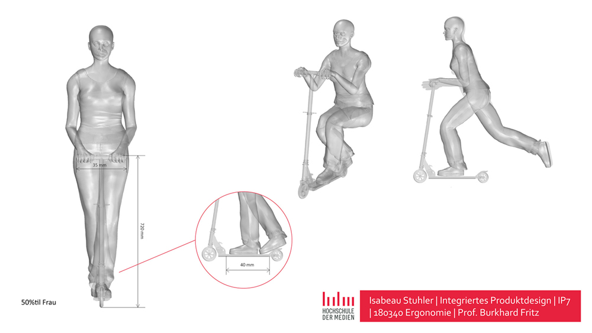

Fusion 360
A Lego man created in Fusion 360

Poser & Rhino 6
In the third semester, an ergonomics study was conducted using Rhinoceros 6 and Poser. A template of the 50-percentile woman was adapted to her own body dimensions in Rhinoceros 6 and transferred to Poser.

Logo Redesign
The company "reinewasser" (drinking water samples) needed a new logo. This should be very simple. Two versions were needed, one in black and one in white.